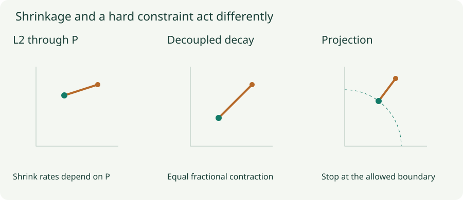

Weight Decay and Norm Constraints: Control the Right Quantity
Separate L2 from AdamW, project max-norm constraints, and understand what spectral normalization bounds.
A weight can become smaller because we changed the objective, changed the optimizer update, or projected it into an allowed set. These operations can coincide in one setting and disagree in another. Keeping their equations separate prevents a common mistake: treating every option called “weight decay” as the same L2 penalty.
1. Why L2 and decay coincide for plain SGD
Let $g=\nabla L(w)$ and penalize the weights by $\lambda\|w\|^2/2$. The penalty gradient is $\lambda w$, so plain SGD takes the step
The first expression adds a loss gradient; the second explicitly shrinks the old weights. They give the same update for plain SGD with the stated convention. For $w=2$, $g=0.3$, $\eta=0.1$, and $\lambda=0.2$, both give $1.93$: $0.04$ of shrinkage plus a $0.03$ data step. Momentum and adaptive state require checking the complete update, not just rearranging this one line.
2. A preconditioner changes the penalty step
Suppose a diagonal matrix $P_t$ rescales coordinates of a gradient. Applying it to the complete regularized gradient gives
The penalty is now rescaled too. Coordinates with different diagonal entries receive different fractional shrinkage. Decoupled decay instead uses
Here the data step still uses $P_t$, but the shrinkage does not. With $w=(2,2)$, $P=\operatorname{diag}(1,0.1)$, $g=0$, $\eta=0.1$, and $\lambda=0.2$, the coupled update yields $(1.96,1.996)$; decoupled decay yields $(1.96,1.96)$. The second coordinate makes the difference obvious.
Adam is more involved than a fixed $P$: its first and second moments depend on previous gradients. Adding $\lambda w$ to Adam’s gradient also feeds that term into its moment estimates. AdamW keeps direct decay outside those estimates. The experiment below freezes a preconditioner to isolate this distinction; it does not claim to simulate all of Adam’s state.

3. Lab: isolate the shrinkage
Two coordinates, no data gradient
Start at $(2,2)$. The first preconditioner entry is 1; change the second entry and compare 40 updates with learning rate $0.1$. “L2 through P” uses a fixed diagonal preconditioner, not a full Adam run.
If $P_{22}=1$, both coordinate curves coincide. Reducing it slows only the coupled shrinkage of coordinate two. The decay coefficient is not a per-run shrinkage percentage: over $T$ steps with changing learning rates, decay alone multiplies a weight by $\prod_t(1-\eta_t\lambda)$. Changing training length or the schedule therefore changes its accumulated effect.
4. A norm constraint draws a hard boundary
A constraint such as $\|w\|_2\le c$ excludes parameters outside a ball. Projected gradient descent first proposes $z=w-\eta g$, then chooses the closest allowed point:
If $z=(3,4)$ and $c=2$, its norm is 5, so projection gives $(1.2,1.6)$. A proposal already inside the ball is untouched. L2 shrinkage, in contrast, can change a nonzero weight even inside that ball. Max-norm constraints commonly apply this operation separately to each unit’s incoming weight vector. “Max” refers to limiting those vector norms, not clipping every entry independently.
Penalty and constraint formulations can sometimes share an optimum for a suitable coefficient and radius. That does not make their optimization trajectories identical, or provide a universal conversion between $\lambda$ and $c$ in a nonconvex network.
5. Spectral normalization controls amplification
For a matrix $W$, its largest singular value is the operator norm $\|W\|_2=\max_{\|x\|=1}\|Wx\|$. It measures the largest amplification over input directions. A spectrally normalized effective matrix uses $\bar W=cW/\sigma_{\max}(W)$ for nonzero $W$. An alternative spectral constraint only rescales if the norm exceeds $c$; these are different transformations.
A diagonal matrix with entries $(3,1)$ has spectral norm 3. Normalizing to $c=1$ gives $(1,1/3)$, bounding every output norm by the corresponding input norm. For a composition of linear layers and 1-Lipschitz activations, the product of operator norms bounds overall sensitivity. Residual additions and other operations change that bound.
Spectral normalization often estimates the leading singular value using power iteration. An estimate is not an exact certificate. For convolutions, flattening the kernel into a matrix is also not generally the same as computing the operator norm of the full spatial convolution. State which operator you constrain.
6. Related operations and practical choices
| Operation | Quantity controlled | Key distinction |
|---|---|---|
| Gradient clipping | The current update’s input gradient | Does not directly bound parameter norms. |
| Max-norm projection | A specified weight vector’s norm | Only acts when the proposed vector exceeds the limit. |
| Spectral normalization | Largest matrix amplification | Does not force every singular value to be equal. |
| Orthogonality penalty | For example $\|W^TW-I\|_F^2$ | Encourages several singular values toward one when the shape permits it. |
| Weight normalization | A direction/scale parameterization | A reparameterization alone does not impose a small-norm constraint. |
Record the optimizer’s actual decay semantics, the loss reduction, the learning-rate schedule, and which parameter groups receive decay. Biases and normalization parameters often need separate consideration. Tune against validation results; the name of the method does not determine the right coefficient.
Questions with answers
No. The added term enters Adam’s gradient moments. AdamW applies a separate parameter shrinkage step.
No. Bounded steps can accumulate into large weights. A weight constraint requires an operation on the parameters themselves.
Not exactly: the products of per-step factors differ, and the data gradients also change the path. Small-step approximations do not establish exact equivalence.
Sources
Loshchilov and Hutter, Decoupled Weight Decay Regularization; Miyato et al., Spectral Normalization for Generative Adversarial Networks. The coordinate experiment and projection calculations are original examples.